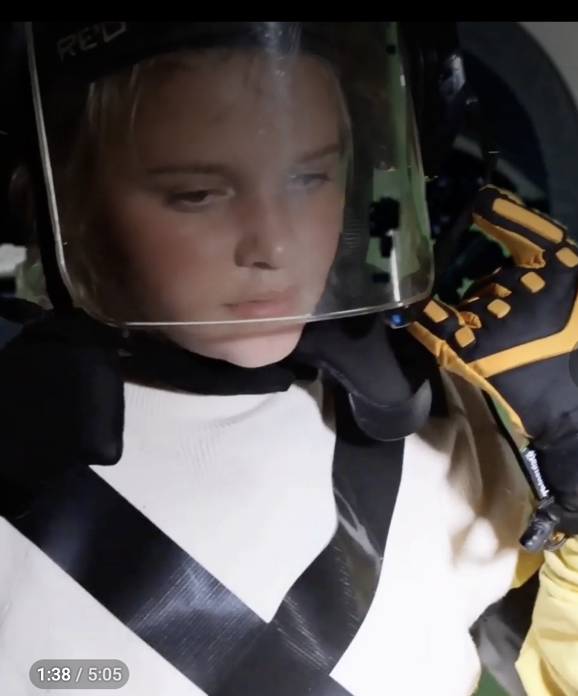
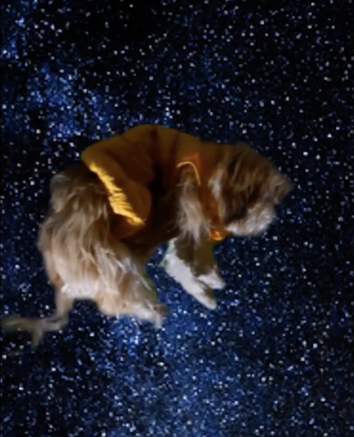
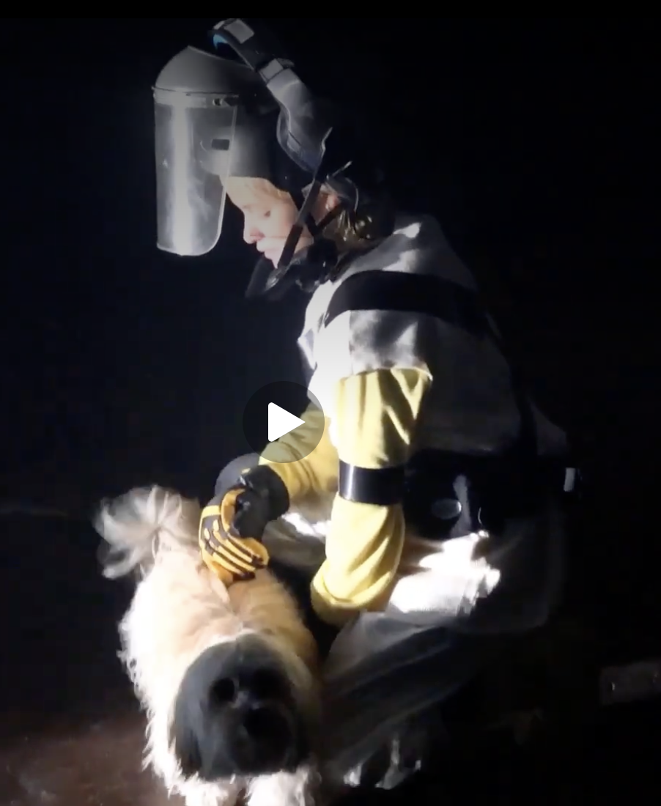

What Genre Is This?
August 2025

Every myth beat lands. Not as deeply as a two-hour feature would land them, but all of them, in order, in five minutes.

Is it science fiction? Not really.
The science fiction, meanwhile, is only the landscape. The genre needed a strange world for the trials and space was free. The space station, the derelict, the suit, the dog in vacuum — none of it is asking a question about technology or about what it means to be human. The suit is a joke about the budget. The dog in vacuum is a joke about the budget. The Occulus goggles at the end are a joke about the budget. Science fiction supplied the floor, not the point.
The detective elements were costume. We wore them for the brief. A tutor appeared. A rubber band appeared. The dialog beat landed. The "case" was named at the end, to a dog, out loud. All the surface tokens were there. Underneath them we filmed something else.
So what is the film?
It is a coming-of-age myth with a science-fiction landscape and a detective costume. An eleven-year-old invents an identity for herself on top of a slide — astronaut, detective, hero — and spends five minutes inside the invention. She comes back out of it with one specific fact she did not have before. Don't jump off tall things. That is a small, specific, honest piece of growing-up wisdom, delivered to a dog, in a park, on a Sunday.
The LA 48 did not advance us from this one. The Project does not grade on this question, which is fair. But for the record, this magazine would like Ghost in Orion 9 filed, correctly, as a coming-of-age myth with a detective costume on.
— SD
We know Ghost in Orion 9 was five-minute film about a bored eleven-year-old who dreams she is an astronaut sent to reboot a derelict space station, and wakes up being yelled at by her tutor. This magazine is left to sort out what the film's genre actually was.
Is this a detective film? No.
Detective films need four things which were not in it.
First their needs to be a crime. Not an atmosphere of something-went-wrong, a specific crime with a specific victim. Ghost in Orion 9 never names a crime. The crew of Orion Station is presumably dead somewhere offscreen. Nobody says how. Nobody asks.
Second, a detective film needs an investigation. Rachael walks through the derelict ship, and the camera does a nice ninety-degree roll trick, and the heartbeat tone rises, and that is all atmosphere. She finds no clue. She interviews no witness. She chases no lead.
Third, a detective film needs a wrong solution. Somewhere in the middle, the audience should be invited to guess, and should guess wrong. The film does not ask the audience to theorize about anything. There is nothing to be wrong about.
Fourth, and this is the one, a detective film needs a resolution where the detective does not change. The world is restored to order. The detective is still the same person, still outside, still waiting for the next case. Rachael climbs down off the slide and announces, "Tomorrow, let's go to the beach. I'll teach you to fight sharks." She is already planning the next adventure. A detective does not plan adventures. A detective waits for one to be delivered.
So no. Not a detective film.

Could we call it a myth? We think so.
A myth film opens with an ordinary world and a hero who does not yet know what they are capable of. Ghost in Orion 9 opens on a bored child on top of a slide, holding a rubber band. A myth hero gets a call to adventure. The film cuts to a NASA voice and a split-screen launch. "Earth needs you." A myth hero travels through trials in a strange world. Rachael crosses two hundred meters of vacuum in a duct-taped painter's suit, holding a dog in no suit at all, and then walks through a derelict ship while a ghost voice tells her not to jump. A myth hero confronts a shadow self, a warning voice, a dark father. The ghost repeats, "Don't jump echoes, don't jump." A myth hero has a death-and-rebirth moment. We cut to Rachael at the top of the slide, about to jump; the tutor's voice saves her. A myth hero comes back with a small specific piece of wisdom. Rachael leaves the park with Sunny on a leash and announces she will teach the dog to fight sharks.